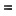
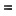

Anzeigefilter beschränken die Ansicht auf bestimmte Vergleichsergebnisse. Sie können beispielsweise Unterschiede anzeigen  auswählen, um alle identischen Dateien auszublenden, so dass Sie sich auf die Unterschiede konzentrieren können. Die aktuelle Auswahl der Anzeigefilter wird gespeichert, sobald Sie die Sitzung verlassen, es sei denn, es handelt sich um eine gesperrte Sitzung.
auswählen, um alle identischen Dateien auszublenden, so dass Sie sich auf die Unterschiede konzentrieren können. Die aktuelle Auswahl der Anzeigefilter wird gespeichert, sobald Sie die Sitzung verlassen, es sei denn, es handelt sich um eine gesperrte Sitzung.
Die meisten Sitzungstypen haben eine Art eigene Anzeigefilter-Implementation. Die folgenden Beispiele sind einer Ordnervergleichssitzung entnommen.
Führen Sie einen Rechtsklick auf der Symbolleiste aus, um eine von drei integrierten Anzeigefilterarten auszuwählen: Aufklappbare Filter, Filter-Favoriten oder Filter-Ein-/Ausschalter. Oder wählen Sie Symbolleistenoptionen um Ihr eigenes Layout zu erstellen.
Aufklappbare Filter
"Aufklappbare Filter" ist der Standard für die Symbolleiste, der wegen der Einfachheit und aus Platzersparnisgründen erdacht wurde.

Die Schaltflächen stehen für Alle anzeigen  , Unterschiede anzeigen
, Unterschiede anzeigen  und Identische anzeigen . Die aufklappbare Liste auf der mittleren Schaltfläche ermöglicht Ihnen unterschiedlich kombinierte Anzeigefilter einzustellen.
und Identische anzeigen . Die aufklappbare Liste auf der mittleren Schaltfläche ermöglicht Ihnen unterschiedlich kombinierte Anzeigefilter einzustellen.
Filter-Favoriten
"Filter-Favoriten" beinhalten verschiedenartige Filterkombinationen auf der Symbolleiste.
Filter-Ein-/Ausschalter
Die Ein-/Ausschalter repräsentieren individuelle Vergleichszustände.
Wählen Sie diesen Modus, falls Sie Kombinationen benötigen, die durch die anderen Filterarten nicht abgedeckt werden. Zum Beispiel: die obige Stellung der Ein-/Ausschalter wird linksseitige Singles und rechtsseitig Neuere anzeigen, aber keine weiteren.